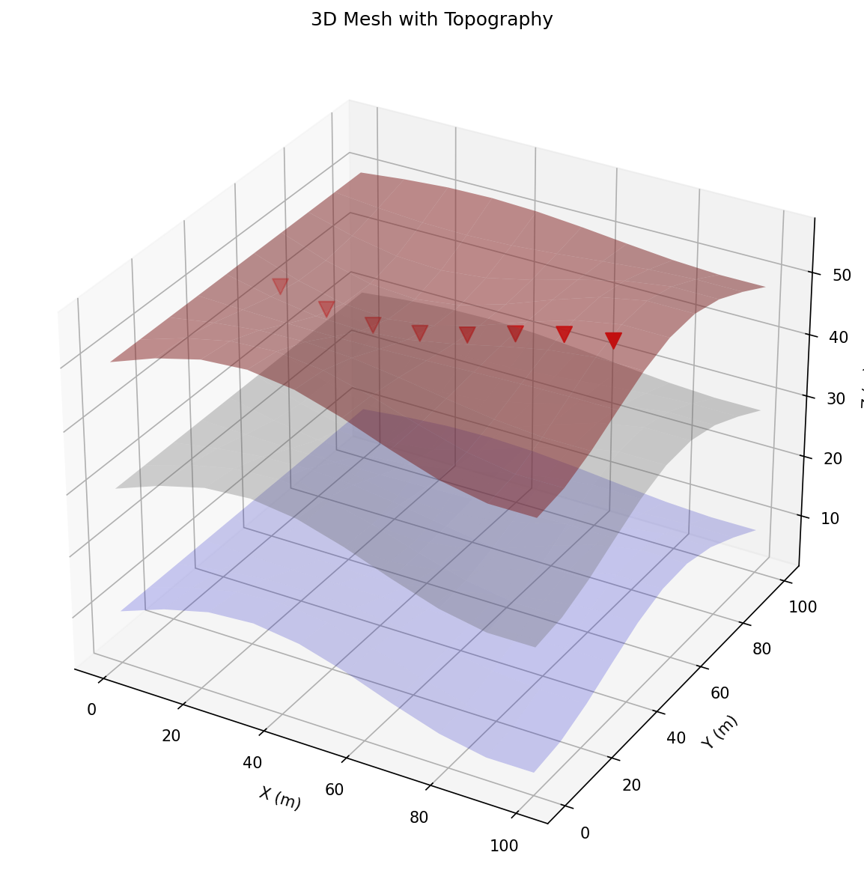
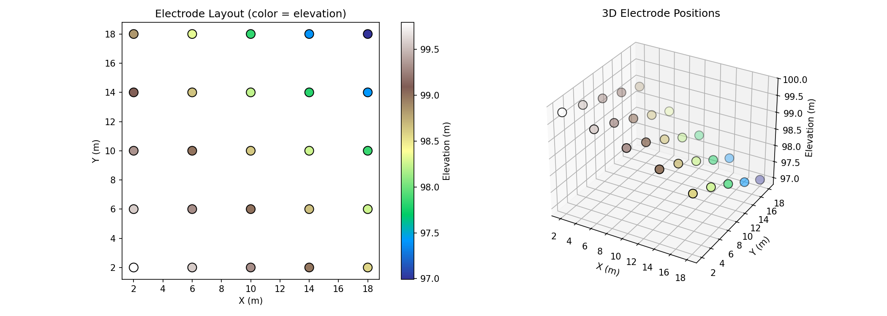
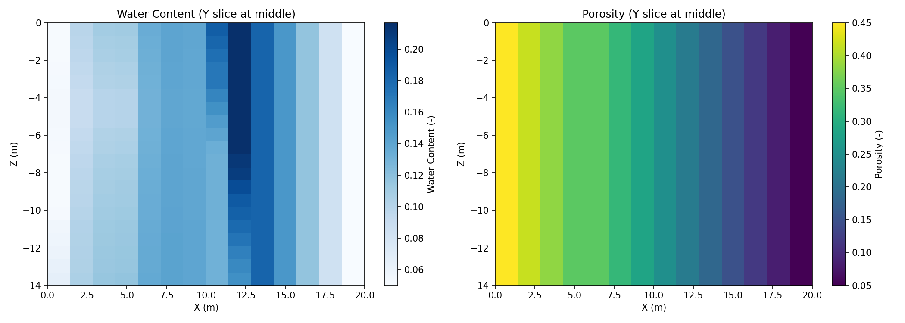
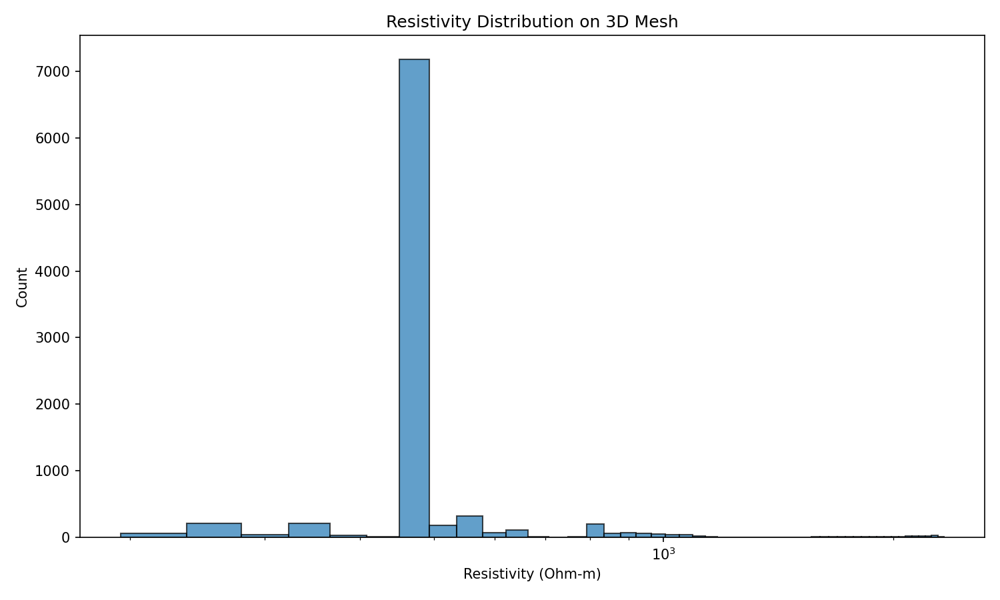
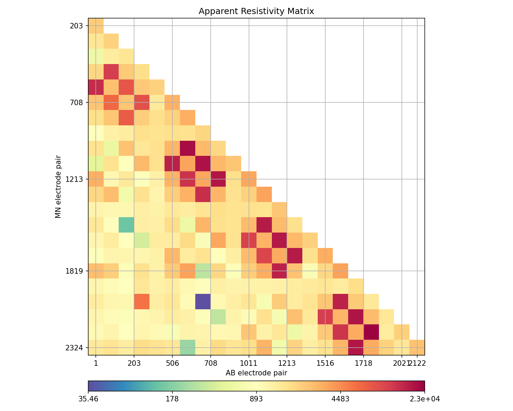
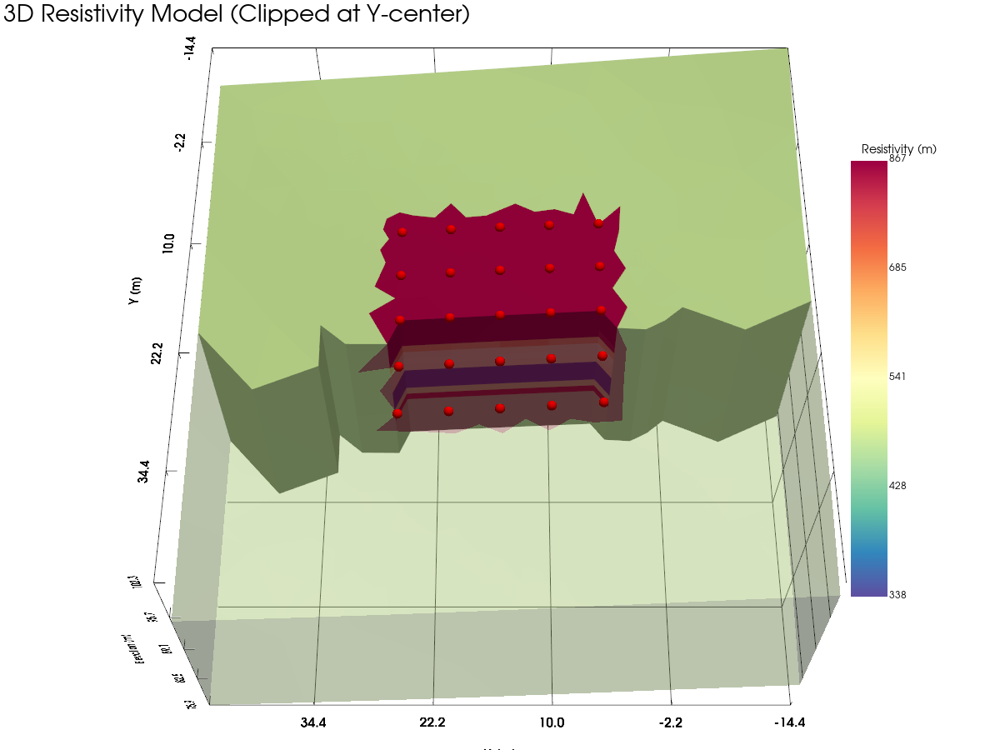
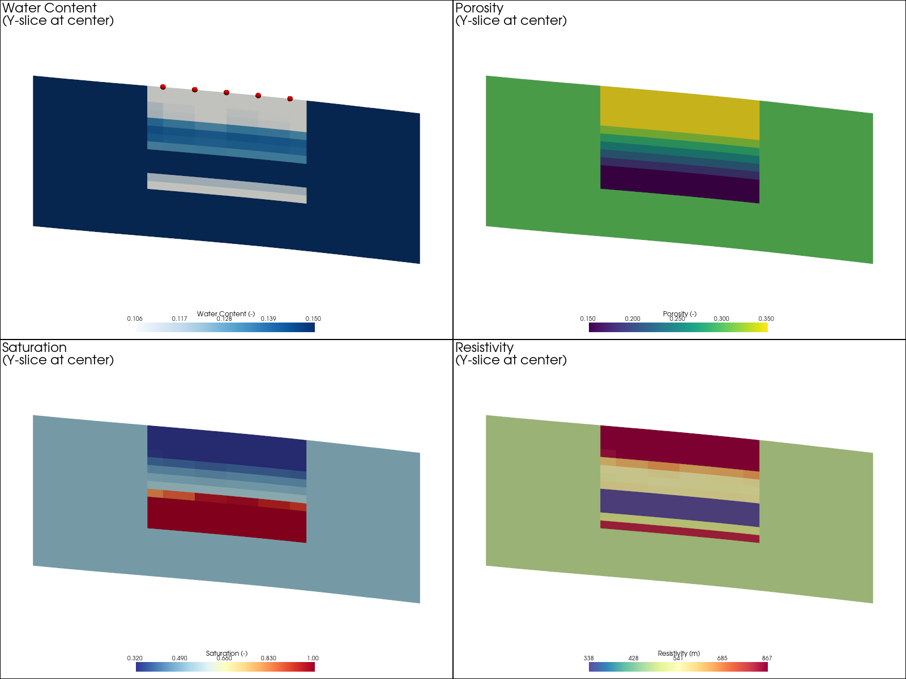
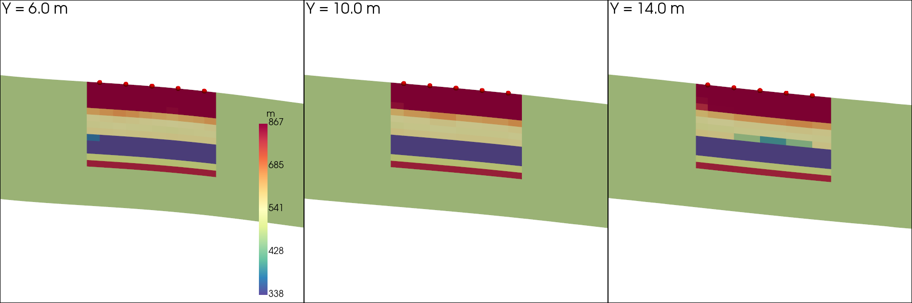
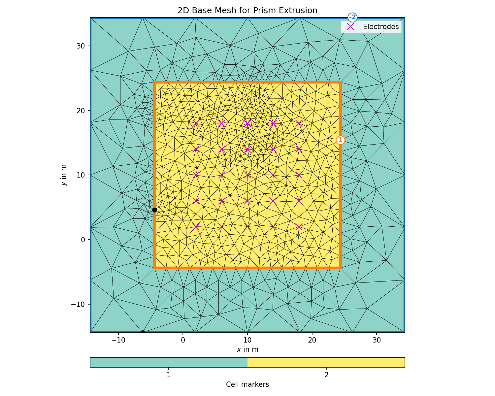

Note
Go to the end to download the full example code.
3D ERT Forward Modeling with MODFLOW Integration#
This example demonstrates the complete workflow for 3D ERT forward modeling using PyHydroGeophysX, integrating hydrological model outputs.
from typing import Any
sphinx_gallery_thumbnail_path = ‘auto_examples/images/Ex_3D_ERT_forward_fig_01.png’
# 3D ERT Forward Modeling Workflow with Topography
This example demonstrates 3D ERT forward modeling using PyHydroGeophysX, integrating MODFLOW hydrological model outputs with realistic topography.
## Workflow Overview
Tutorial: Learn how to use mesh_3d.py module
Load MODFLOW water content and porosity data
Create 3D mesh with topography and electrode positions
Interpolate hydrological properties to 3D mesh
Convert water content to resistivity using petrophysical relationships
Perform 3D ERT forward modeling
Visualize results
—
## Tutorial: Using mesh_3d.py for 3D Mesh Creation
The mesh_3d.py module provides a Mesh3DCreator class with several methods for creating different types of 3D meshes. Here’s a quick reference:
### Key Classes and Functions
|----------------|————-| | Mesh3DCreator | Main class for creating 3D meshes | | create_surface_electrode_array() | Create regular surface electrode grid | | create_borehole_electrode_array() | Create electrodes for borehole | | create_crosshole_electrode_array() | Create multi-borehole electrode setup | | create_3d_mesh_with_topography() | Create mesh following topography | | apply_topography_to_electrodes() | Apply surface elevation to electrodes | | create_box_mesh() | Create simple box mesh (flat surface) | | create_prism_mesh_from_2d() | Extrude 2D mesh to 3D prisms |
### Quick Start Examples
```python from PyHydroGeophysX.core.mesh_3d import Mesh3DCreator
# Initialize mesh creator creator = Mesh3DCreator(
mesh_directory=’./meshes’, elec_refinement=0.5, # Mesh size near electrodes node_refinement=2.0, # Mesh size at boundaries attractor_distance=5.0 # Distance for mesh refinement
)
# Example 1: Surface electrode array electrodes = creator.create_surface_electrode_array(
nx=10, ny=6, # Grid size dx=5.0, dy=5.0, # Spacing x_offset=0, y_offset=0, z=0.0 # Surface elevation
)
# Example 2: Apply topography to electrodes electrodes = creator.apply_topography_to_electrodes(
electrodes, topography_func=lambda x, y: 100 + 0.1*x - 0.05*y # Example
)
# Example 3: Create 3D mesh with topography mesh = creator.create_3d_mesh_with_topography(
electrode_positions=electrodes, topography_func=lambda x, y: 100 + 0.1*x, para_depth=20.0, use_prism_mesh=True
)#
import importlib
import os
import sys
import matplotlib.pyplot as plt
import numpy as np
import pandas as pd
# PyGIMLi imports
import pygimli as pg
import pygimli.meshtools as mt
from pygimli.physics import ert
# Setup package path for development
try:
current_dir = os.path.dirname(os.path.abspath(__file__))
except NameError:
current_dir = os.getcwd()
parent_dir = os.path.dirname(current_dir)
if parent_dir not in sys.path:
sys.path.insert(0, parent_dir)
output_dir = os.path.join(current_dir, "results", "3d_ert_workflow")
os.makedirs(output_dir, exist_ok=True)
# Import and reload PyHydroGeophysX modules (ensures latest code is used)
import PyHydroGeophysX.core.mesh_3d as mesh_3d_module
importlib.reload(mesh_3d_module)
from PyHydroGeophysX.core.mesh_3d import (
Mesh3DCreator,
create_3d_ert_data_container,
interpolate_modflow_to_3d_mesh,
)
from PyHydroGeophysX.petrophysics.resistivity_models import WS_Model
# Optional: PyVista for 3D visualization
try:
import pyvista as pv
from pygimli.viewer import pv as pgpv
PYVISTA_AVAILABLE = True
pv.set_plot_theme("document")
except ImportError:
PYVISTA_AVAILABLE = False
print("PyVista not available. 3D visualization will be limited.")
print(f"PyGIMLi version: {pg.__version__}")
print(f"Mesh3DCreator methods: {[m for m in dir(Mesh3DCreator) if not m.startswith('_')]}")
Analyze MODFLOW data to find regions with active cells (non-NaN) This helps us position the forward modeling domain optimally
data_dir = os.path.join(current_dir, "data")
water_content_full = np.load(os.path.join(data_dir, "Watercontent.npy"))
if water_content_full.ndim == 4:
wc_check = water_content_full[0] # First timestep
else:
wc_check = water_content_full
print(f"Full MODFLOW data shape (nlay, nrow, ncol): {wc_check.shape}")
modflow_nlay, modflow_nrow, modflow_ncol = wc_check.shape
# Create a map of valid (non-NaN) cell percentages across the grid
# Average across all layers to see which horizontal areas are most active
valid_fraction = np.zeros((modflow_nrow, modflow_ncol))
for i in range(modflow_nlay):
valid_fraction += ~np.isnan(wc_check[i, :, :])
valid_fraction /= modflow_nlay
print(f"Valid data fraction range: {valid_fraction.min():.2%} to {valid_fraction.max():.2%}")
# Find regions with high active cell density (>80% active across layers)
high_activity = valid_fraction > 0.8
# Find the bounding box of the high-activity region
rows_active = np.where(np.any(high_activity, axis=1))[0]
cols_active = np.where(np.any(high_activity, axis=0))[0]
if len(rows_active) > 0 and len(cols_active) > 0:
row_min, row_max = rows_active[0], rows_active[-1]
col_min, col_max = cols_active[0], cols_active[-1]
print(f"\nHigh activity region (>80% active):")
print(f" Rows: {row_min} to {row_max} (height: {row_max - row_min + 1})")
print(f" Cols: {col_min} to {col_max} (width: {col_max - col_min + 1})")
# Visualize the valid data fraction
fig, axes = plt.subplots(1, 2, figsize=(16, 6))
# Plot valid fraction map
im = axes[0].imshow(valid_fraction, origin='lower', cmap='YlGn')
axes[0].set_xlabel('Column (X)')
axes[0].set_ylabel('Row (Y)')
axes[0].set_title('Fraction of Active Cells Across Layers')
plt.colorbar(im, ax=axes[0], label='Active fraction')
axes[0].contour(valid_fraction, levels=[0.8], colors='red', linewidths=2)
axes[0].text(5, 180, '>80% active boundary', color='red', fontsize=10)
# Plot water content at layer 0 to see spatial pattern
im2 = axes[1].imshow(wc_check[0, :, :], origin='lower', cmap='Blues')
axes[1].set_xlabel('Column (X)')
axes[1].set_ylabel('Row (Y)')
axes[1].set_title('Water Content at Layer 0 (surface)')
plt.colorbar(im2, ax=axes[1], label='Water Content')
plt.tight_layout()
plt.savefig(os.path.join(output_dir, 'modflow_active_cells.png'), dpi=150)
plt.show()
MODFLOW Active Cells Analysis#
This figure shows the fraction of active cells across all MODFLOW layers (left) and the water content at the surface layer (right). The red contour indicates regions with >80% active cells, helping identify optimal domain placement.
Figure saved to: modflow_active_cells.png
# Calculate optimal domain placement
# Find the centroid of the high-activity region
if len(rows_active) > 0 and len(cols_active) > 0:
# Calculate center of active region
center_row = (row_min + row_max) // 2
center_col = (col_min + col_max) // 2
print(f"\nCenter of high-activity region: row={center_row}, col={center_col}")
# Suggest a smaller domain size that fits well
suggested_size = 25 # meters (smaller domain)
print(f"\nSuggested domain placement for {suggested_size}m x {suggested_size}m area:")
print(f" X offset: {center_col - suggested_size//2} to {center_col + suggested_size//2}")
print(f" Y offset: {center_row - suggested_size//2} to {center_row + suggested_size//2}")
Find the optimal placement for a smaller domain that is 100% within active cells We need ALL cells in the domain to be active (non-NaN)
# Check valid fraction more strictly - we want areas with 100% active cells across all layers
fully_active = valid_fraction == 1.0
# Find the largest rectangular region that is fully active
# For simplicity, let's find the center of mass of the fully active region
rows_full, cols_full = np.where(fully_active)
if len(rows_full) > 0:
# Center of the fully active region
center_row_full = int(np.median(rows_full))
center_col_full = int(np.median(cols_full))
print(f"Fully active region stats:")
print(f" Number of fully active cells: {len(rows_full)}")
print(f" Center (median): row={center_row_full}, col={center_col_full}")
# Test different domain sizes at the center location
for domain_size in [20, 25, 30]:
half = domain_size // 2
r1, r2 = center_row_full - half, center_row_full + half
c1, c2 = center_col_full - half, center_col_full + half
# Ensure within bounds
r1, c1 = max(0, r1), max(0, c1)
r2, c2 = min(modflow_nrow, r2), min(modflow_ncol, c2)
# Check if this region is fully active
region_active = fully_active[r1:r2, c1:c2]
active_pct = np.mean(region_active) * 100
print(f"\n {domain_size}m x {domain_size}m domain at center:")
print(f" Rows: {r1} to {r2}, Cols: {c1} to {c2}")
print(f" Active cell percentage: {active_pct:.1f}%")
# Let's visualize where we want to place the domain
fig, ax = plt.subplots(figsize=(10, 8))
im = ax.imshow(valid_fraction, origin='lower', cmap='YlGn')
ax.set_xlabel('Column (X)')
ax.set_ylabel('Row (Y)')
ax.set_title('Suggested Domain Placement (20m x 20m)')
plt.colorbar(im, ax=ax, label='Active fraction')
# Draw proposed domain (20m x 20m in the center)
domain_size = 20
half = domain_size // 2
domain_rect = plt.Rectangle(
(center_col_full - half, center_row_full - half),
domain_size, domain_size,
fill=False, edgecolor='red', linewidth=3, linestyle='--'
)
ax.add_patch(domain_rect)
ax.plot(center_col_full, center_row_full, 'r*', markersize=15, label='Domain center')
# Also show 80% boundary
ax.contour(valid_fraction, levels=[0.8], colors='orange', linewidths=1.5)
ax.legend()
plt.tight_layout()
plt.savefig(os.path.join(output_dir, 'proposed_domain_placement.png'), dpi=150)
plt.show()
Proposed Domain Placement#
This figure shows the suggested 20m x 20m domain placement (red dashed box) centered in the region with fully active MODFLOW cells. The orange contour indicates the 80% active cell boundary.
{kind=link}

# Calculate the optimal parameters for the domain setup
print("\n" + "="*60)
print("OPTIMAL DOMAIN PARAMETERS:")
print("="*60)
print(f"Domain size: {domain_size}m x {domain_size}m")
print(f"Domain offset in MODFLOW grid: x={center_col_full - half}, y={center_row_full - half}")
print(f"Domain center in MODFLOW grid: x={center_col_full}, y={center_row_full}")
print(f"\nSuggested electrode array: 5x5 grid with 4m spacing")
print(f" This gives 20m coverage with electrodes at x=[0, 4, 8, 12, 16] and y=[0, 4, 8, 12, 16]")
## Step 1: Define Domain Geometry and Create Electrodes on Topographic Surface
We’ll create a 3D domain with a surface electrode array that follows realistic topography. This is essential for accurate ERT modeling in areas with significant terrain variation.
Define domain dimensions (in meters) Using smaller domain (20m x 20m) centered in the active MODFLOW region
domain_length = 20.0 # x-direction
domain_width = 20.0 # y-direction
domain_depth = 14.0 # z-direction (matching MODFLOW nlay=14 layers)
# MODFLOW grid offset (from analysis cells above)
# This places the domain at col=67, row=85 which is 100% within active cells
MODFLOW_X_OFFSET = 67 # column offset in MODFLOW grid
MODFLOW_Y_OFFSET = 85 # row offset in MODFLOW grid
# Create mesh creator with appropriate refinement settings
mesh_creator = Mesh3DCreator(
mesh_directory=os.path.join(output_dir, 'meshes'),
elec_refinement=0.3, # Fine mesh near electrodes (smaller for smaller domain)
node_refinement=1.5, # Coarser mesh at boundaries
attractor_distance=4.0 # Distance for refinement transition
)
# Create surface electrode array (5x5 grid with 4m spacing = 16m coverage)
# Electrodes positioned with 2m offset from edges
electrode_positions = mesh_creator.create_surface_electrode_array(
nx=5, ny=5,
dx=4.0, dy=4.0, # 4m spacing
x_offset=2.0, # 2m from edge
y_offset=2.0, # 2m from edge
z=0.0 # Will be updated with topography
)
print(f"Domain size: {domain_length}m x {domain_width}m x {domain_depth}m")
print(f"MODFLOW offset: x={MODFLOW_X_OFFSET}, y={MODFLOW_Y_OFFSET}")
print(f"Number of electrodes: {len(electrode_positions)}")
print(f"Electrode spacing: 4m x 4m")
print(f"Electrode coverage: {electrode_positions['x'].min():.1f} to {electrode_positions['x'].max():.1f} m (X)")
print(f" {electrode_positions['y'].min():.1f} to {electrode_positions['y'].max():.1f} m (Y)")
print(electrode_positions.head(10))
Define topography function This example creates a sloping surface with some undulation Replace with your actual topography data or function
def topography_function(
x: Any,
y: Any,
) -> Any:
"""
Example topography function returning elevation for (x, y) coordinates.
This creates a surface sloping from ~105m at (0,0) to ~95m at (50,30)
with some undulation for realism.
"""
# Base slope
base_elevation = 100.0
slope_x = -0.1 # m/m slope in x direction
slope_y = -0.05 # m/m slope in y direction
# Add some undulation for realism
undulation = 0.5 * np.sin(x / 10.0) * np.cos(y / 8.0)
elevation = base_elevation + slope_x * x + slope_y * y + undulation
return elevation
# Apply topography to electrode positions using mesh_3d.py
electrode_positions = mesh_creator.apply_topography_to_electrodes(
electrode_positions,
topography_func=topography_function
)
print("Electrodes with topography applied:")
print(f" Z range: {electrode_positions['z'].min():.2f} to {electrode_positions['z'].max():.2f} m")
print(electrode_positions.head(10))
Visualize electrode layout with topography
fig = plt.figure(figsize=(14, 5))
# 2D Layout
ax1 = fig.add_subplot(121)
scatter = ax1.scatter(
electrode_positions['x'],
electrode_positions['y'],
c=electrode_positions['z'],
cmap='terrain',
s=100,
edgecolors='black'
)
ax1.set_xlabel('X (m)')
ax1.set_ylabel('Y (m)')
ax1.set_title('Electrode Layout (color = elevation)')
ax1.set_aspect('equal')
plt.colorbar(scatter, ax=ax1, label='Elevation (m)')
# 3D Layout
ax2 = fig.add_subplot(122, projection='3d')
ax2.scatter(
electrode_positions['x'],
electrode_positions['y'],
electrode_positions['z'],
c=electrode_positions['z'],
cmap='terrain',
s=100,
edgecolors='black'
)
ax2.set_xlabel('X (m)')
ax2.set_ylabel('Y (m)')
ax2.set_zlabel('Elevation (m)')
ax2.set_title('3D Electrode Positions')
plt.tight_layout()
plt.savefig(os.path.join(output_dir, 'electrode_layout.png'), dpi=150)
plt.show()
Electrode Layout with Topography#
This figure shows the 5x5 electrode array with 4m spacing. The 2D view (left) shows electrode positions colored by elevation, while the 3D view (right) illustrates how electrodes follow the topographic surface.
{kind=link}

## Step 2: Create 3D Mesh with Topography Using mesh_3d.py
We use the create_3d_mesh_with_topography() method from Mesh3DCreator to create a mesh that follows our topographic surface. This ensures accurate ERT modeling in terrain with elevation changes.
Key options: - use_prism_mesh=True: Creates efficient prism mesh (good for layered structures) - use_prism_mesh=False: Creates tetrahedral mesh using PyGIMLi’s PLC approach
Method 1: Create 3D mesh WITH topography using mesh_3d.py This creates a mesh that follows the surface elevation
print("Creating 3D mesh with topography using mesh_3d.py...")
# Define marker regions based on depth below surface
depth_markers = {
'shallow': (0, 5, 2), # 0-5m depth: marker 2
'middle': (5, 15, 3), # 5-15m depth: marker 3
'deep': (15, 30, 1) # >15m depth: marker 1 (boundary)
}
mesh = mesh_creator.create_3d_mesh_with_topography(
electrode_positions=electrode_positions,
topography_func=topography_function,
para_depth=domain_depth,
boundary_extension=1.4,
boundary_depth=5.0,
para_max_cell_size=5.0,
dz_fine=1.0,
dz_coarse=2.0,
use_prism_mesh=True, # Use prism mesh for efficiency
markers=depth_markers
)
print(f"Mesh created: {mesh}")
print(f" Nodes: {mesh.nodeCount()}")
print(f" Cells: {mesh.cellCount()}")
print(f" Boundaries: {mesh.boundaryCount()}")
Create ERT data container using mesh_3d.py helper function
from PyHydroGeophysX.core.mesh_3d import create_3d_ert_data_container
# Create data container with dipole-dipole scheme
data = create_3d_ert_data_container(
electrode_positions=electrode_positions,
scheme='dd', # dipole-dipole
dimension=3 # 3D geometric factors
)
print(f"Data container: {data}")
print(f"Number of measurements: {data.size()}")
print(f"Geometric factors calculated for 3D")
Save mesh
mesh.save(os.path.join(output_dir, 'mesh_3d.bms'))
mesh.exportVTK(os.path.join(output_dir, 'mesh_3d.vtk'))
print(f"Mesh saved to {output_dir}")
## Step 3: Load and Prepare Hydrological Data
Load MODFLOW output (water content, porosity) and prepare for interpolation to the 3D mesh. The data needs to be defined in the same coordinate system as the mesh, with z-values relative to the topographic surface.
Load hydrological data (example using synthetic data) Replace with actual MODFLOW data loading
data_dir = os.path.join(current_dir, "data")
# Try to load actual data, otherwise create synthetic
try:
water_content_full = np.load(os.path.join(data_dir, "Watercontent.npy"))
if water_content_full.ndim == 4: # (time, nlay, nrow, ncol)
water_content_3d = water_content_full[0] # First timestep
else:
water_content_3d = water_content_full
porosity_3d = np.load(os.path.join(data_dir, "Porosity.npy"))
print("Loaded actual MODFLOW data")
print(f"Full water content shape: {water_content_3d.shape}")
print(f"Full porosity shape: {porosity_3d.shape}")
USE_REAL_DATA = True
# Use the optimal MODFLOW offset from domain setup cell
# MODFLOW_X_OFFSET and MODFLOW_Y_OFFSET define where our domain starts
x_start = MODFLOW_X_OFFSET
x_end = MODFLOW_X_OFFSET + int(domain_length)
y_start = MODFLOW_Y_OFFSET
y_end = MODFLOW_Y_OFFSET + int(domain_width)
# Get the original dimensions
modflow_nlay, modflow_nrow, modflow_ncol = water_content_3d.shape
# Ensure bounds are within the data
x_start = max(0, x_start)
x_end = min(modflow_ncol, x_end)
y_start = max(0, y_start)
y_end = min(modflow_nrow, y_end)
# Crop to region of interest - this region is 100% within active cells
water_content_3d = water_content_3d[:, y_start:y_end, x_start:x_end]
porosity_3d = porosity_3d[:, y_start:y_end, x_start:x_end]
print(f"\nCropped to domain region: {water_content_3d.shape}")
print(f"MODFLOW X range: {x_start} to {x_end} (domain X: 0 to {x_end-x_start} m)")
print(f"MODFLOW Y range: {y_start} to {y_end} (domain Y: 0 to {y_end-y_start} m)")
# Check for NaN values in cropped region
nan_count_wc = np.sum(np.isnan(water_content_3d))
nan_count_por = np.sum(np.isnan(porosity_3d))
total_cells = water_content_3d.size
print(f"\nData quality check:")
print(f" Water content NaN count: {nan_count_wc} / {total_cells} ({nan_count_wc/total_cells*100:.1f}%)")
print(f" Porosity NaN count: {nan_count_por} / {total_cells} ({nan_count_por/total_cells*100:.1f}%)")
# Update dimensions for interpolation
nlay, nrow, ncol = water_content_3d.shape
print(f"\nFinal dimensions: nlay={nlay}, nrow={nrow}, ncol={ncol}")
except FileNotFoundError:
print("Creating synthetic hydrological data for demonstration...")
USE_REAL_DATA = False
# Create synthetic 3D water content field
# Dimensions matching our domain
nlay, nrow, ncol = int(domain_depth), int(domain_width), int(domain_length)
# Create coordinate arrays
x = np.linspace(0, domain_length, ncol)
y = np.linspace(0, domain_width, nrow)
z = np.linspace(-domain_depth, 0, nlay) # Depth relative to surface
X, Y, Z = np.meshgrid(x, y, z, indexing='ij')
# Synthetic water content (higher near surface, varies laterally)
water_content_3d = 0.15 + 0.15 * np.exp(Z.T / 5.0)
water_content_3d += 0.05 * np.sin(X.T / 10.0) * np.cos(Y.T / 8.0)
water_content_3d = np.clip(water_content_3d, 0.05, 0.45)
# Synthetic porosity (decreases with depth, some lateral variation)
porosity_3d = 0.35 + 0.1 * np.exp(Z.T / 10.0)
porosity_3d += 0.02 * np.sin(X.T / 15.0)
porosity_3d = np.clip(porosity_3d, 0.1, 0.45)
# Transpose to (nlay, nrow, ncol) format like MODFLOW
water_content_3d = np.transpose(water_content_3d, (2, 1, 0))
porosity_3d = np.transpose(porosity_3d, (2, 1, 0))
print(f"Synthetic water content shape: {water_content_3d.shape}")
print(f"Synthetic porosity shape: {porosity_3d.shape}")
Visualize a vertical slice of the synthetic data
fig, axes = plt.subplots(1, 2, figsize=(14, 5))
# Water content slice
slice_idx = water_content_3d.shape[2] // 2
im1 = axes[0].imshow(
water_content_3d[:, :, slice_idx].T,
extent=[0, domain_length, -domain_depth, 0],
aspect='auto',
cmap='Blues',
origin='lower'
)
axes[0].set_xlabel('X (m)')
axes[0].set_ylabel('Z (m)')
axes[0].set_title(f'Water Content (Y slice at middle)')
plt.colorbar(im1, ax=axes[0], label='Water Content (-)')
# Porosity slice
im2 = axes[1].imshow(
porosity_3d[:, :, slice_idx].T,
extent=[0, domain_length, -domain_depth, 0],
aspect='auto',
cmap='viridis',
origin='lower'
)
axes[1].set_xlabel('X (m)')
axes[1].set_ylabel('Z (m)')
axes[1].set_title(f'Porosity (Y slice at middle)')
plt.colorbar(im2, ax=axes[1], label='Porosity (-)')
plt.tight_layout()
plt.savefig(os.path.join(output_dir, 'hydro_data_slices.png'), dpi=150)
plt.show()
Hydrological Data Slices#
Vertical cross-sections showing the water content (left) and porosity (right) from MODFLOW. These hydrological properties will be interpolated to the 3D mesh and converted to resistivity using the Waxman-Smits model.
{kind=link}

## Step 4: Interpolate Hydrological Properties to 3D Mesh
Interpolate the MODFLOW data to mesh cell centers. Since our mesh follows topography, we need to account for the local surface elevation when determining the depth of each mesh cell.
from scipy.interpolate import RegularGridInterpolator
# Get mesh cell centers
cell_centers = np.array(mesh.cellCenters())
print(f"Number of mesh cells: {len(cell_centers)}")
print(f"Cell center bounds:")
print(f" X: [{cell_centers[:,0].min():.2f}, {cell_centers[:,0].max():.2f}]")
print(f" Y: [{cell_centers[:,1].min():.2f}, {cell_centers[:,1].max():.2f}]")
print(f" Z: [{cell_centers[:,2].min():.2f}, {cell_centers[:,2].max():.2f}]")
# Calculate depth below local surface for each cell
cell_depths = np.zeros(len(cell_centers))
for i, (x, y, z) in enumerate(cell_centers):
surface_z = topography_function(x, y)
cell_depths[i] = surface_z - z # Positive depth below surface
print(f"\nCell depths range: {cell_depths.min():.2f} to {cell_depths.max():.2f} m")
Create grid coordinates for interpolation Using depth-relative coordinates (depth below local surface)
nlay, nrow, ncol = water_content_3d.shape
if USE_REAL_DATA:
# For real MODFLOW data with 1m grid spacing
# Use full domain coordinates (0 to domain_length/width)
x_min = 0.0
x_max = domain_length
y_min = 0.0
y_max = domain_width
# Grid spacing (1m for MODFLOW)
dx = domain_length / ncol
dy = domain_width / nrow
# Assume depth is domain_depth spread across nlay layers
dz = domain_depth / nlay
# Cell center coordinates (cell centers, not edges)
x_coords = np.linspace(dx/2, domain_length - dx/2, ncol)
y_coords = np.linspace(dy/2, domain_width - dy/2, nrow)
depth_coords = np.linspace(dz/2, domain_depth - dz/2, nlay) # Positive depth
else:
# For synthetic data
dx = domain_length / ncol
dy = domain_width / nrow
dz = domain_depth / nlay
x_coords = np.linspace(dx/2, domain_length - dx/2, ncol)
y_coords = np.linspace(dy/2, domain_width - dy/2, nrow)
depth_coords = np.linspace(dz/2, domain_depth - dz/2, nlay)
print(f"Grid coordinates for interpolation:")
print(f" X: {x_coords[0]:.2f} to {x_coords[-1]:.2f} ({ncol} points)")
print(f" Y: {y_coords[0]:.2f} to {y_coords[-1]:.2f} ({nrow} points)")
print(f" Depth: {depth_coords[0]:.2f} to {depth_coords[-1]:.2f} ({nlay} points)")
Create interpolators for water content and porosity Handle NaN values in MODFLOW data (inactive cells)
wc_data = water_content_3d.copy()
por_data = porosity_3d.copy()
# Replace NaN values with reasonable defaults
default_wc = 0.15
default_por = 0.30
nan_count_wc = np.isnan(wc_data).sum()
nan_count_por = np.isnan(por_data).sum()
print(f"NaN values in water content: {nan_count_wc} ({100*nan_count_wc/wc_data.size:.1f}%)")
print(f"NaN values in porosity: {nan_count_por} ({100*nan_count_por/por_data.size:.1f}%)")
# Fill NaN with defaults
wc_data = np.nan_to_num(wc_data, nan=default_wc)
por_data = np.nan_to_num(por_data, nan=default_por)
# Reshape data: original is (nlay, nrow, ncol), need (ncol, nrow, nlay) for (x, y, depth)
wc_transposed = np.transpose(wc_data, (2, 1, 0)) # (ncol, nrow, nlay)
por_transposed = np.transpose(por_data, (2, 1, 0))
print(f"Transposed shapes: WC {wc_transposed.shape}, Por {por_transposed.shape}")
wc_interpolator = RegularGridInterpolator(
(x_coords, y_coords, depth_coords),
wc_transposed,
method='linear',
bounds_error=False,
fill_value=default_wc
)
por_interpolator = RegularGridInterpolator(
(x_coords, y_coords, depth_coords),
por_transposed,
method='linear',
bounds_error=False,
fill_value=default_por
)
# Interpolate to mesh cell centers using (x, y, depth) coordinates
# Create interpolation points: (x, y, depth_below_surface)
interp_points = np.column_stack([
cell_centers[:, 0], # x
cell_centers[:, 1], # y
cell_depths # depth below local surface
])
wc_mesh = wc_interpolator(interp_points)
porosity_mesh = por_interpolator(interp_points)
# Calculate saturation (ensure no division by zero)
porosity_mesh = np.maximum(porosity_mesh, 0.05) # Minimum porosity
saturation_mesh = np.clip(wc_mesh / porosity_mesh, 0.0, 1.0)
print(f"\nInterpolated values on mesh:")
print(f" Water content: min={wc_mesh.min():.3f}, max={wc_mesh.max():.3f}")
print(f" Porosity: min={porosity_mesh.min():.3f}, max={porosity_mesh.max():.3f}")
print(f" Saturation: min={saturation_mesh.min():.3f}, max={saturation_mesh.max():.3f}")
## Step 5: Convert Water Content to Resistivity
Use the Waxman-Smits petrophysical model to convert saturation and porosity to electrical resistivity.
Petrophysical parameters (Waxman-Smits model)
sigma_w = 0.05 # Conductivity of pore water (S/m) - ~20 Ohm-m
m = 1.5 # Cementation exponent
n = 2.0 # Saturation exponent
sigma_s = 0.001 # Surface conductivity (S/m)
# Convert to resistivity using Waxman-Smits model
# res = 1 / (sigma_w * porosity^m * saturation^n + sigma_s)
resistivity_mesh = WS_Model(
saturation_mesh,
porosity_mesh,
sigma_w,
m,
n,
sigma_s
)
# Ensure valid resistivity values
resistivity_mesh = np.clip(resistivity_mesh, 10, 10000)
print(f"Resistivity on mesh: min={resistivity_mesh.min():.1f} Ohm-m, max={resistivity_mesh.max():.1f} Ohm-m")
Visualize resistivity distribution
fig, ax = plt.subplots(figsize=(10, 6))
ax.hist(resistivity_mesh, bins=50, edgecolor='black', alpha=0.7)
ax.set_xlabel('Resistivity (Ohm-m)')
ax.set_ylabel('Count')
ax.set_title('Resistivity Distribution on 3D Mesh')
ax.set_xscale('log')
plt.tight_layout()
plt.savefig(os.path.join(output_dir, 'resistivity_histogram.png'), dpi=150)
plt.show()
Resistivity Distribution#
Histogram showing the distribution of resistivity values on the 3D mesh after petrophysical conversion using the Waxman-Smits model. The log-scale x-axis reveals the range of resistivity values in the model.
{kind=link}

## Step 6: Perform 3D ERT Forward Modeling
Create forward modeling operator
fop = ert.ERTModelling()
fop.setData(data)
fop.setMesh(mesh)
print(f"Forward operator configured")
print(f" Data points: {data.size()}")
print(f" Model cells: {mesh.cellCount()}")
Perform forward modeling
print("Running 3D ERT forward modeling...")
response = fop.response(resistivity_mesh)
print(f"Forward modeling complete!")
print(f"Response: min={np.min(response):.2f}, max={np.max(response):.2f} Ohm-m")
Add noise to create synthetic “measured” data
np.random.seed(42)
noise_level = 0.03 # 3% relative error
response_noisy = response * (1.0 + noise_level * np.random.randn(len(response)))
# Store in data container
data['rhoa'] = response_noisy
data['err'] = np.abs(noise_level * response_noisy) # Absolute error
# Estimate error using ERTManager
mgr = ert.ERTManager(data)
data['err'] = mgr.estimateError(data, relativeError=noise_level, absoluteUError=1e-4)
print(f"Synthetic data with {noise_level*100:.0f}% noise added")
Save synthetic data
data.save(os.path.join(output_dir, 'synthetic_3d_data.dat'))
print(f"Synthetic data saved to {output_dir}/synthetic_3d_data.dat")
## Step 7: Visualize Results
Visualize apparent resistivity data
from pygimli.viewer.mpl import showDataContainerAsMatrix
# Create pseudo-indices for visualization
ab = data['a'] * 100 + data['b']
mn = data['m'] * 100 + data['n']
fig, ax = plt.subplots(figsize=(10, 8))
ax, cb = showDataContainerAsMatrix(data, ab, mn, 'rhoa', ax=ax, cMap='Spectral_r')
ax.set_xlabel('AB electrode pair')
ax.set_ylabel('MN electrode pair')
ax.set_title('Apparent Resistivity Matrix')
plt.tight_layout()
plt.savefig(os.path.join(output_dir, 'rhoa_matrix.png'), dpi=150)
plt.show()
Apparent Resistivity Matrix#
Matrix representation of apparent resistivity data from the 3D ERT forward modeling. Each cell represents a unique electrode configuration (AB injection pair vs MN measurement pair) in the dipole-dipole survey.
{kind=link}

3D visualization with PyVista (if available)
if PYVISTA_AVAILABLE:
# Add resistivity to mesh for visualization
mesh['resistivity'] = resistivity_mesh
# Convert PyGIMLi mesh to PyVista
mesh.exportVTK(os.path.join(output_dir, 'mesh_with_res.vtk'))
pv_mesh = pv.read(os.path.join(output_dir, 'mesh_with_res.vtk'))
# Get data ranges for better color scaling
res_min, res_max = np.percentile(resistivity_mesh, [5, 95])
print(f"Resistivity range (5-95 percentile): {res_min:.1f} - {res_max:.1f} Ohm-m")
# Create plotter with better window size
pl = pv.Plotter(window_size=(1200, 900))
# Add clipped mesh to see internal structure
# Clip at y = center to show cross-section
mesh_center = pv_mesh.center
clipped = pv_mesh.clip(normal='y', origin=mesh_center, crinkle=True)
pl.add_mesh(
clipped,
scalars='resistivity',
cmap='Spectral_r',
clim=[res_min, res_max],
log_scale=True,
show_edges=False,
scalar_bar_args={
'title': 'Resistivity (Ωm)',
'vertical': True,
'position_x': 0.85,
'position_y': 0.2,
'width': 0.1,
'height': 0.6,
'fmt': '%.0f',
'title_font_size': 14,
'label_font_size': 12
}
)
# Add surface mesh with transparency to show topography
surface = pv_mesh.extract_surface()
pl.add_mesh(
surface,
scalars='resistivity',
cmap='Spectral_r',
clim=[res_min, res_max],
log_scale=True,
opacity=0.3,
show_scalar_bar=False
)
# Add electrode positions with labels
electrode_points = electrode_positions[['x', 'y', 'z']].values
pl.add_points(
electrode_points,
color='red',
point_size=12,
render_points_as_spheres=True
)
# Add axes and bounds
pl.show_bounds(
grid='back',
location='outer',
xlabel='X (m)',
ylabel='Y (m)',
zlabel='Elevation (m)',
font_size=12
)
# Set camera for better view angle
pl.camera_position = 'iso'
pl.camera.azimuth = 45
pl.camera.elevation = 25
pl.camera.zoom(1.2)
# Add title
pl.add_text(
'3D Resistivity Model (Clipped at Y-center)',
position='upper_left',
font_size=14,
color='black'
)
# Save screenshot
pl.screenshot(os.path.join(output_dir, '3d_resistivity_model.png'))
pl.show()
3D Resistivity Model#
Interactive 3D visualization of the resistivity model using PyVista. The mesh is clipped at the Y-center to reveal internal structure. Red spheres indicate electrode positions on the topographic surface.
{kind=link}

else:
print("PyVista not available. Skipping 3D visualization.")
print("Install with: pip install pyvista")
Create 2D slices for visualization - Multiple cross-sections
if PYVISTA_AVAILABLE:
# Export mesh with all data
mesh['water_content'] = wc_mesh
mesh['porosity'] = porosity_mesh
mesh['saturation'] = saturation_mesh
mesh['resistivity'] = resistivity_mesh
mesh.exportVTK(os.path.join(output_dir, 'mesh_with_all_data.vtk'))
pv_mesh = pv.read(os.path.join(output_dir, 'mesh_with_all_data.vtk'))
# Get data ranges for better color scaling
wc_range = [np.percentile(wc_mesh, 5), np.percentile(wc_mesh, 95)]
por_range = [np.percentile(porosity_mesh, 5), np.percentile(porosity_mesh, 95)]
sat_range = [np.percentile(saturation_mesh, 5), np.percentile(saturation_mesh, 95)]
res_range = [np.percentile(resistivity_mesh, 5), np.percentile(resistivity_mesh, 95)]
# Create multi-view visualization with better layout
pl = pv.Plotter(shape=(2, 2), window_size=(1600, 1200))
# Get mesh bounds and electrode bounds for slice positions
bounds = pv_mesh.bounds
elec_y_min = electrode_positions['y'].min()
elec_y_max = electrode_positions['y'].max()
mesh_center = pv_mesh.center
# Create Y-normal slice at electrode center (shows X-Z cross-section)
y_slice_pos = (elec_y_min + elec_y_max) / 2
slice_y = pv_mesh.slice(normal='y', origin=[mesh_center[0], y_slice_pos, mesh_center[2]])
# Common scalar bar settings
sbar_args = {
'vertical': False,
'height': 0.08,
'width': 0.4,
'position_x': 0.3,
'position_y': 0.02,
'title_font_size': 12,
'label_font_size': 10,
'n_labels': 5
}
# Plot 1: Water Content (top-left)
pl.subplot(0, 0)
pl.add_mesh(
slice_y.copy(),
scalars='water_content',
cmap='Blues',
clim=wc_range,
show_edges=False,
scalar_bar_args={**sbar_args, 'title': 'Water Content (-)'}
)
# Add electrodes projected onto slice
elec_near_slice = electrode_positions[abs(electrode_positions['y'] - y_slice_pos) < 3]
if len(elec_near_slice) > 0:
pl.add_points(elec_near_slice[['x', 'y', 'z']].values, color='red', point_size=10,
render_points_as_spheres=True)
pl.add_text('Water Content\n(Y-slice at center)', position='upper_left', font_size=11)
pl.view_xz()
pl.camera.zoom(1.3)
# Plot 2: Porosity (top-right)
pl.subplot(0, 1)
pl.add_mesh(
slice_y.copy(),
scalars='porosity',
cmap='viridis',
clim=por_range,
show_edges=False,
scalar_bar_args={**sbar_args, 'title': 'Porosity (-)'}
)
pl.add_text('Porosity\n(Y-slice at center)', position='upper_left', font_size=11)
pl.view_xz()
pl.camera.zoom(1.3)
# Plot 3: Saturation (bottom-left)
pl.subplot(1, 0)
pl.add_mesh(
slice_y.copy(),
scalars='saturation',
cmap='RdYlBu_r',
clim=sat_range,
show_edges=False,
scalar_bar_args={**sbar_args, 'title': 'Saturation (-)'}
)
pl.add_text('Saturation\n(Y-slice at center)', position='upper_left', font_size=11)
pl.view_xz()
pl.camera.zoom(1.3)
# Plot 4: Resistivity (bottom-right)
pl.subplot(1, 1)
pl.add_mesh(
slice_y.copy(),
scalars='resistivity',
cmap='Spectral_r',
clim=res_range,
log_scale=True,
show_edges=False,
scalar_bar_args={**sbar_args, 'title': 'Resistivity (Ωm)', 'fmt': '%.0f'}
)
pl.add_text('Resistivity\n(Y-slice at center)', position='upper_left', font_size=11)
pl.view_xz()
pl.camera.zoom(1.3)
# Link all cameras so they move together
pl.link_views()
# Save and show
pl.screenshot(os.path.join(output_dir, '2d_slices_properties.png'))
pl.show()
2D Property Slices#
Four-panel visualization showing Y-normal cross-sections of water content, porosity, saturation, and resistivity. These slices are taken at the center of the electrode array to show the vertical distribution of properties.
{kind=link}

# === Additional: Multiple X-Z slices at different Y positions ===
print("\nCreating multiple cross-section visualization...")
# Use 3 Y positions - electrodes are at Y = 2, 6, 10, 14, 18
y_positions = [6.0, 10.0, 14.0]
pl2 = pv.Plotter(shape=(1, 3), window_size=(1800, 600))
for i, y_pos in enumerate(y_positions):
pl2.subplot(0, i)
# Slice at this Y position
slice_at_y = pv_mesh.slice(normal='y', origin=[mesh_center[0], y_pos, mesh_center[2]])
# Only add mesh if slice has data
if slice_at_y.n_cells > 0:
pl2.add_mesh(
slice_at_y,
scalars='resistivity',
cmap='Spectral_r',
clim=res_range,
log_scale=True,
show_edges=False,
scalar_bar_args={
'vertical': True,
'title': 'Ωm',
'position_x': 0.85,
'height': 0.6,
'width': 0.08,
'fmt': '%.0f'
}
)
# Add electrodes near this Y position
elec_near = electrode_positions[abs(electrode_positions['y'] - y_pos) < 1]
if len(elec_near) > 0:
pl2.add_points(elec_near[['x', 'y', 'z']].values, color='red',
point_size=10, render_points_as_spheres=True)
pl2.add_text(f'Y = {y_pos:.1f} m', position='upper_left', font_size=12)
pl2.view_xz()
pl2.camera.zoom(1.2)
# Don't link views here - let each panel have its own view
pl2.screenshot(os.path.join(output_dir, '2d_slices_multi_y.png'))
pl2.show()
Multiple Y Cross-Sections#
Resistivity cross-sections at three different Y positions (6m, 10m, 14m), showing the spatial variability of the subsurface resistivity structure along the electrode array.
{kind=link}

else:
print("PyVista not available for slice visualization.")
## Step 8: Alternative Mesh Creation Methods
The mesh_3d.py module supports multiple mesh creation approaches:
### Option A: Prism Mesh (used above) - Created with create_3d_mesh_with_topography(use_prism_mesh=True) - Efficient for layered structures - Triangular prisms extruded from 2D mesh
### Option B: Tetrahedral Mesh - Created with create_3d_mesh_with_topography(use_prism_mesh=False) - Uses PyGIMLi’s createParaMeshPLC3D - Better for complex 3D structures
### Option C: Manual Prism Mesh - Use create_prism_mesh_from_2d(mesh2d, z_vector) for custom control
Below we show the manual approach for comparison:
Alternative: Manual 2D mesh creation for prism extrusion This gives you more control over the 2D base mesh
# Get unique x-y positions from electrodes
xy_positions = electrode_positions[['x', 'y']].drop_duplicates().values
# Create 2D surface mesh using mesh_3d.py
mesh2d = mesh_creator.create_surface_mesh_with_topography(
electrode_positions=electrode_positions,
boundary_extension=1.4,
area=2.0,
quality=34.3
)
# Add boundary region
boundary_size = 5
mesh2d_with_bnd = mt.appendTriangleBoundary(
mesh2d, boundary=boundary_size, isSubSurface=False, marker=1
)
print(f"2D base mesh: {mesh2d_with_bnd}")
Visualize 2D mesh
fig, ax = plt.subplots(figsize=(10, 8))
pg.show(mesh2d_with_bnd, markers=True, showMesh=True, ax=ax)
ax.plot(*xy_positions.T, 'mx', markersize=10, label='Electrodes')
ax.legend()
ax.set_title('2D Base Mesh for Prism Extrusion')
plt.tight_layout()
plt.savefig(os.path.join(output_dir, '2d_base_mesh.png'), dpi=150)
plt.show()
2D Base Mesh for Prism Extrusion#
The 2D triangular mesh that serves as the base for prism mesh creation. Electrode positions are marked with magenta crosses. The mesh is refined near electrodes and coarser at boundaries.
{kind=link}

Create z-discretization vector
dz_coarse = 2.0 # Coarser spacing for top/bottom
dz_fine = 0.5 # Finer spacing in middle
z_top = np.arange(0, 2, dz_coarse)
z_mid = np.arange(z_top[-1], domain_depth - 2, dz_fine)
z_bot = np.arange(z_mid[-1], domain_depth + boundary_size + 0.1, dz_coarse)
z_vec = -np.concatenate([z_top, z_mid[1:], z_bot[1:]])
print(f"Z-vector: {len(z_vec)} levels from {z_vec.min():.1f} to {z_vec.max():.1f}")
Create 3D prism mesh using mesh_3d.py
mesh3d_prism = mesh_creator.create_prism_mesh_from_2d(
mesh2d=mesh2d_with_bnd,
z_vector=z_vec,
surface_marker=1,
subsurface_marker=2
)
print(f"3D prism mesh: {mesh3d_prism}")
# Set markers based on depth
depth_top = 2.0 # Top region
depth_bot = domain_depth - 2.0 # Bottom region
for c in mesh3d_prism.cells():
cd = -c.center().z() # Center depth (positive)
if cd < depth_top or cd > depth_bot:
c.setMarker(1) # Boundary region
# Save prism mesh
mesh3d_prism.save(os.path.join(output_dir, 'mesh_3d_prism.bms'))
mesh3d_prism.exportVTK(os.path.join(output_dir, 'mesh_3d_prism.vtk'))
print(f"Prism mesh saved to {output_dir}")
## Summary
This notebook demonstrated:
mesh_3d.py Module Tutorial: Learned how to use the Mesh3DCreator class
Electrode Layout with Topography: Created surface electrodes following terrain
3D Mesh with Topography: Used create_3d_mesh_with_topography() for realistic terrain
Data Integration: Interpolated MODFLOW outputs using depth-relative coordinates
Petrophysics: Converted water content/saturation to resistivity using Waxman-Smits
Forward Modeling: Computed synthetic 3D ERT response
Visualization: Created 3D visualizations using PyVista
—
## mesh_3d.py Quick Reference
### Mesh3DCreator Methods
|--------|————-| | create_surface_electrode_array(nx, ny, dx, dy, …) | Regular grid of surface electrodes | | create_borehole_electrode_array(x, y, z_positions) | Single borehole electrodes | | create_crosshole_electrode_array(borehole_positions, z_positions) | Multiple boreholes | | apply_topography_to_electrodes(electrodes, topography_func) | Set electrode z from topography | | create_3d_mesh_with_topography(electrodes, topography_func, …) | Main method for terrain-following mesh | | create_box_mesh(length, width, height, electrodes) | Simple flat box mesh | | create_prism_mesh_from_2d(mesh2d, z_vector) | Extrude 2D mesh to prisms | | visualize_mesh(mesh, electrode_positions) | 3D visualization with PyVista |
### Helper Functions
|----------|————-| | create_3d_ert_data_container(electrodes, scheme, dim) | Create ERT data with 3D geometric factors | | interpolate_modflow_to_3d_mesh(mesh, data, grid) | Interpolate MODFLOW data to mesh | | export_electrodes_to_csv(electrodes, path) | Save electrodes to CSV |
### Next Steps
Perform 3D ERT inversion using ert.ERTManager
Compare inverted model with true model
Analyze resolution and sensitivity
Time-lapse monitoring applications
print("=" * 60)
print("3D ERT forward modeling workflow complete!")
print("=" * 60)
print(f"\nOutput files saved to: {output_dir}")
print(" - mesh_3d.bms/vtk: Tetrahedral mesh with topography")
print(" - mesh_3d_prism.bms/vtk: Prism mesh")
print(" - synthetic_3d_data.dat: Synthetic ERT data")
print(" - Various visualization plots")
print("\n" + "=" * 60)
print("Key mesh_3d.py functions used:")
print("=" * 60)
print(" - Mesh3DCreator() : Initialize mesh creator")
print(" - create_surface_electrode_array() : Create electrode grid")
print(" - apply_topography_to_electrodes() : Apply surface elevation")
print(" - create_3d_mesh_with_topography() : Create terrain-following mesh")
print(" - create_3d_ert_data_container() : Create ERT data with 3D k-factors")